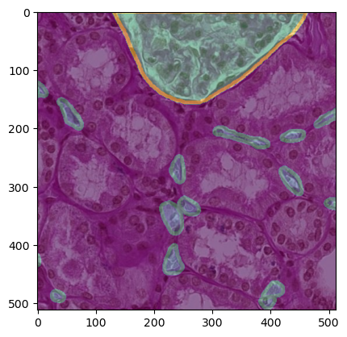
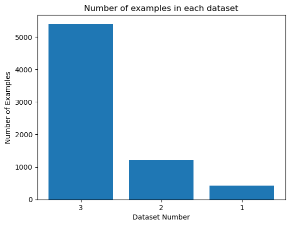
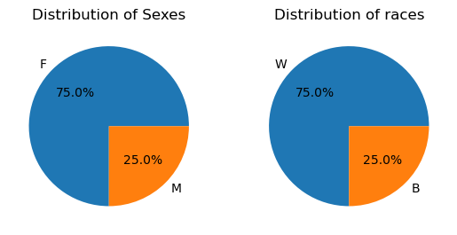
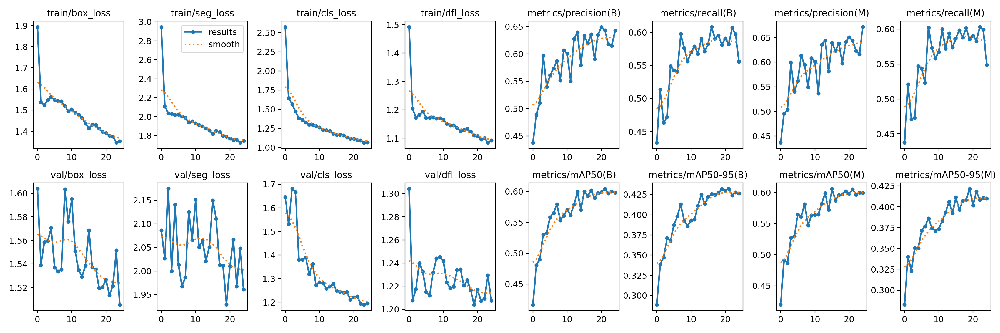

Host
HuBMAP
NIH · IU
NIH · IU
An applied research project on microvascular instance segmentation in PAS-stained human kidney histology.
One question, followed all the way through: which method actually finds these vessels, and does it hold up on slides it has never seen? Clinical motivation, two model families, a reproducible pipeline, and honest conclusions. Best public score AP@0.6 = 0.3317, with every number traced to a primary source.
The function of human organs depends on the spatial organization of ~37 trillion cells. To map them, the Vasculature Common Coordinate Framework (VCCF) uses blood vasculature — down to individual capillaries — as a coordinate system. Gaps in our knowledge of microvasculature become gaps in the VCCF.
HuBMAP 2023 asked participants to automatically segment microvascular structures (blood vessels) in Periodic acid-Schiff stained whole-slide images of healthy human kidney — a step toward a Human Reference Atlas.
To study that task honestly, the project is built on a configuration-driven training apparatus. It rasterizes polygonal annotations into semantic or instance masks, applies a reproducible Albumentations pipeline, trains a UNet++ / MobileNetV2 network under PyTorch Lightning with class-balanced cross-entropy, and encodes predictions in the competition's COCO-RLE, zlib, base64 format.
The aim was a maintainable, template-generated system that keeps runs comparable and reproducible, so the experiments in the notebooks can actually be trusted.
Reliable, automated delineation of vessels from stained tissue turns raw slide data into structured, machine-readable vascular maps — a prerequisite for studying how cell-to-cell relationships affect health.

Kidney tissue contains glomeruli (capillary balls that begin the nephron) and dense networks of peritubular capillaries and vasa recta. The target class is blood_vessel; glomerulus regions are excluded (overlaps count as false positives) and ambiguous structures are marked unsure.
Segment instances of microvascular structures so researchers can fill the microvasculature gaps in the VCCF and, ultimately, the Human Reference Atlas.
Tiles extracted from 14 Whole-Slide Images, organized into three datasets of decreasing annotation quality. No competition data or model weights are committed to this repository.
| Dataset | WSIs | Annotations | Purpose |
|---|---|---|---|
| Dataset 1 | subset of 5 | Expert-reviewed polygons | Primary signal · all test tiles originate here |
| Dataset 2 | same 5 | Sparse, not expert-reviewed | Extra / noisy supervision |
| Dataset 3 | +9 more | Unannotated | Semi- / self-supervised opportunities |
tile_meta.csv
polygons.jsonl
TIFF · ~650 in test


Scored exactly as the OpenImages Instance Segmentation Challenge, but with a single class. A predicted mask matches ground truth when their Intersection-over-Union crosses a single threshold of 0.6 — not a COCO-style average over thresholds.
Predictions are ranked by descending confidence; a true positive matches an unclaimed ground-truth vessel at $\mathrm{IoU}\ge 0.6$, while predictions inside glomerulus regions are false positives.
Nothing is hard-coded. Dataset semantics, augmentation and trainer behaviour are declared in YAML that is generated from Python "image" templates, wired through environment variables, then loaded and merged by a builder at runtime.
flowchart LR
A["polygons.jsonl
+ 512x512 tiles"] --> B["HuBMAPDataset
parse + rasterize"]
B --> C["cv2.fillPoly
+ optional borders"]
C --> D["AugmentPipeline
Albumentations"]
D --> E["HuBMAPDataModule
80/20 split"]
E --> F["HuBMAPLightningModule
UNet++ / MobileNetV2"]
F --> G["Class-balanced
Cross-Entropy"]
F --> H["torchmetrics
IoU · F1 · Acc"]
G --> I["HuBMAPTrainer
callbacks + logging"]
H --> I
I --> J["Submission
argmax masks"]
J --> K["COCO-RLE
zlib · base64"]
K --> L["submission.csv"]
Every number here traces to a primary artifact — the official Kaggle submission export, the saved Ultralytics results.csv logs, or the notebooks' own executed outputs. The leaderboard metric is AP at a single IoU = 0.6, single class. Local YOLO numbers are Mask mAP@50 / 50-95 on an 80/20 split, a more forgiving measurement, which is the whole point of the generalization analysis below.
selected · Mask R-CNN line
Mask mAP@50 · blood_vessel
06-20 → 07-07 · 2 selected
| Submission (2023) | Public AP @ 0.6 | Selected | Most likely source |
|---|---|---|---|
| 06-25 | 0.168 → 0.209 | — | early Mask R-CNN drafts |
| 06-26 16:15 | 0.3317 | ✅ best | Mask R-CNN (torchvision) |
| 06-26 20:23 | 0.2737 | ✅ | YOLOv8x-seg |
| 07-07 | 0.2737 | — | YOLO submission notebook |

YOLOv8x-seg + SGD + close_mosaic was the best, most stable line (0.60 Mask mAP@50 locally); SGD beat Adam 0.60 vs 0.45. COCO transfer learning converged Mask R-CNN in 10 epochs (val loss 1.19 → 0.95). The offline submission plumbing (building pycocotools/ultralytics from attached datasets, COCO-RLE to zlib to base64) was verified end-to-end.
Local blood_vessel Mask mAP@50 was 0.690, but the hidden-test board was ~0.27. The cause is in the data code: the train/val split is an unshuffled index slice that ignores WSI boundaries, so tiles from one slide leak across the split. A group-aware per-WSI split is the first fix any next iteration should make.